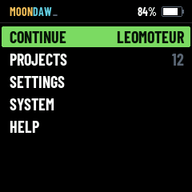
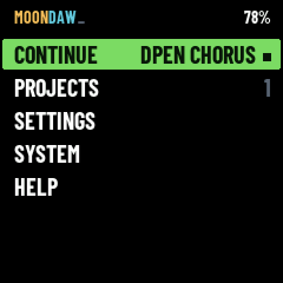
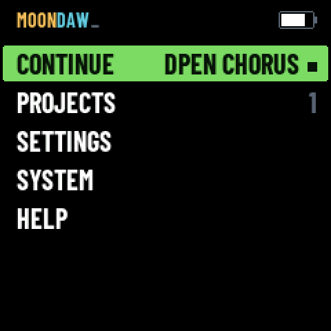
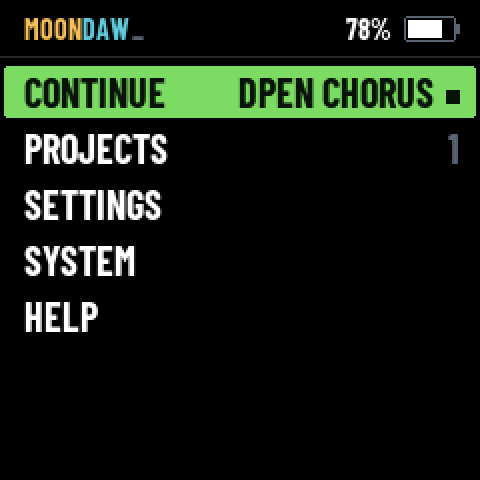
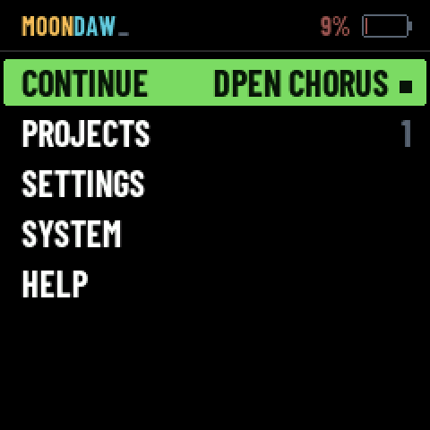
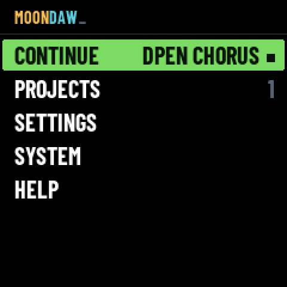

HOME has five rows and half a screen of black under them, so the charge goes
where there is room: a bar above the menu, the wordmark on the left, the battery
on the right. The menu drops by 32 px to make way. Two things left at the same time —
MOONDAW 0.1 at the foot, now said at the top, and MAX at its right,
which SYSTEM already holds as CPU MAX. It is on the machine:
built, installed and read back over the link on 31 October.
The divider was wired all along and the HAL could read it:
firmware/hal/fm1_adc.h gives FM1_ADC_BATT = 3 on PB1,
ten bits. Nothing ever called it. It does now — every sixteenth frame, through the same
/8 filter the MASTER pot runs through — and
plat_battery(int *raw) joins plat_audio_load() on the platform
surface: 0 to 100, or −1 where the machine does not know, which is what
SDL and the browser answer.
What is not measured is the scale. BATT_MV_FS is the cell voltage
that would read full scale — the converter's reference times the divider on PB1 —
and nothing in the chip or in Felucca documents either number. It is set to 6600: the
ordinary wiring, a 2:1 divider on a 3.3 V reference. The panel reads 625 counts,
flat to the count over three minutes and under a 52 % audio load, which is 4.03 V and
84 % under that assumption.
battraw= rides the link beside
batt= for exactly this: a voltmeter on the cell, fm1_ctl.py status
at the same moment, and BATT_MV_FS = mV * 1023 / raw.
The Swift bar carries a pixel wordmark — gold MOON with crescent O's, cyan DAW, a gold
cursor — and the FM-1 already has that drawing: app/logo.h, which the splash
blows up three times. The one-line version of it is 130 x 16, over half of a
240 px screen, so the bar quotes the app rather than copying it: the word in the firmware's
own CONDENSED 14, cut in the app's two inks, with the cursor after it. Same colours, same
reading, a fifth of the width and no new asset to carry.
Two words and a number. Nothing drawn that type cannot say, so the bar is one line of CONDENSED on an empty strip.

Exact. You read 78 and 77 apart, which no bar of pixels lets you do. Nothing new to draw.
You have to read it. A number says nothing at a glance across a desk, and two digits beside a wordmark look like a version number.
Honest to a percent — which the curve behind it will not be, for a while.
The same bar, with a 26 x 13 cell on its side: a grey outline, a nub, and white inside it as far as the charge goes. No figure.

Read without reading: a glance from across the room says full, half or nearly out. It is the one thing on the bar that is not type.
About eight pixels of resolution. 78 and 65 look alike. And it is a second visual idiom on a screen made of words.
Only what it can keep, which suits a gauge nobody has calibrated.
The figure and the cell together, and a one-pixel rule at y = 28 that makes the strip a bar rather than a gap. The glance and the number: the cell is found without looking for it, the figure answers the question the cell raises.

Both readings, and a bar that is visibly a bar: the rule stops the cursor's green band from being the first edge on the screen.
Three things in a strip that held none this morning, and the same fact said twice.
One conversion a frame, on the root only. A frame is DRAWN fifteen times, once a band, and tests/menu_test.c counts the reads so it stays one.
At or under 15 % the ink goes to C_MUTE, the red this machine already uses
for a muted track and for DELETE — the figure and the cell both. And where the machine
cannot say, it says nothing: the right half of the bar is empty, which is the FM-1 today.


T O V C R E W,
the worst block stage by stage — is still there, on the root and in the list. Only the
idle line, the version, left the root, and MAX left both.